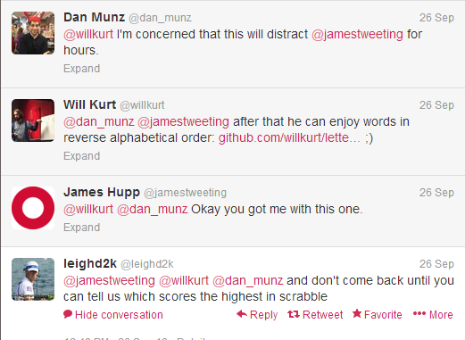
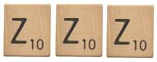
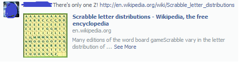
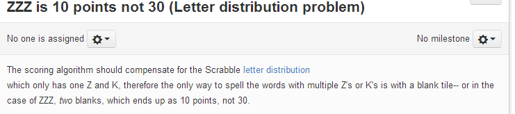
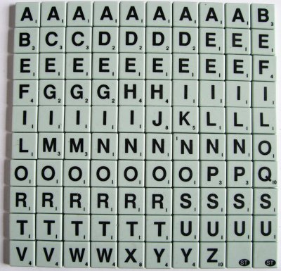

Distracted.
The other day I came across a story on reddit that contained the following picture:

The purpose of the image was to demonstrate that the student took the instructions too seriously and wrote all the words with there letters in alphabetical order. What I found really interesting was that the word fox was the same, so it's letters were alread in alphabetical order.
The obvious question then was What other words in English also have all their letters in alphabetical order?
This seemed like a very easy question to answer, the biggest challange being to get a list of English language words. For this I just went to the Unix/FreeBSD word list from /usr/share/dict/words. Being lazy and it being lunch I just grabbed the list from a website From there the basic code was pretty simple:
in.alpha.order <- function(w,f=function(x){x}){
wasc <- strsplit(w,"")[[1]]
all(wasc == wasc[f(order(wasc))])
}
After this point getting words with alphabetically orderd words out is just a matter of taking a list of all words and taking the ones that match this
get.in.order.words <- function(ws){
#only 3 letter or greater words are interesting to me
ws <- ws[which(sapply(ws,function(w)nchar(w)>2))]
in.order <- which(sapply(ws,in.alpha.order))
ws[in.order]
}
From that I had this list of alphabetically ordered English words, with a few tweaks a list of reverse alphabetically ordered words, and plenty of time for lunch.
I thought this was pretty cool and shared it with a few friends...
From Distraction.
Shortly after sharing a brief twitter conversation brought up a really interesting question:
Scrabble! Of course what a fun thing to find out. I'm not a particularlly big scrabble player myself, but I know enough Scrabble nerds to know that if I found an illegal Scrabble word as the highest scoring I would never hear the end of it. So I decided to find a better words list before even worrying about scoring.
Although there are a few options of words lists, I went with the Official Tournament and Club Word List typically abbreviated TWL06.
Next all I had to do was write the scoring function which I though would be pretty trivial. If you're not familiar with Scrabble, each letter has a point value associate with it and the base score for the word is simply the sum of the values of all the letters in the word.
#scrabble word score
sws <- function(w){
wv <- strsplit(w,"")[[1]]
sum(sapply(wv,sls))
}
#scrabble letter score
sls <- function(l){
if(l %in% c("e","a","i","o","n","r","t","l","s","u")){return(1)}
else if (l %in% c("d","g")){ return(2)}
else if (l %in% c("b","c","m","p")){ return(3)}
else if (l %in% c("f","h","v","w","y")){ return(4)}
else if (l %in% c("k")){ return(5)}
else if (l %in% c("j","x")){ return(8)}
else if (l %in% c("q","z")){ return(10)}
else{return(0)}
}
The code was simple enough, a function to look up the letter value and then another to map across the vector of letters. Now that I had my scores it was time to see what the highest scoring Scrabble words with all of it's letters in alphabetical order was! Worth a total of 30 points it was:
...which was actually pretty lame. Good thing I missed something essential in my scoring function!
By Distraction.
After I posted this list I immediately got 2 nearly identical responses:

It turns out there's a really interesting scoring problem with my initial implementation. There's a specific distribution to letters in scrabble.
As can be seen from the image there's only 1 Z (and K, J, X, and Q for that matter). So the word ZZZ cannot be constructed with all Zs! So why is it a valid Scrabble word? Scrabble lets you use blanks, but they're worth 0 points! So ZZZ is really worth just 10 points!
So clearly my scoring function had to be rewritten to take this into account. I decided the best approach would be to score the word as before, but after that subtract impossible points.
#scrabble word score
sws <- function(w){
wv <- strsplit(w,"")[[1]]
init.score <- sum(sapply(wv,sls))
init.score - impossible.points(wv)
}
impossible.points <- function(wv){
wt <- table(wv)
sum(sapply(names(wt),function(l){
ifelse(wt[l] > letter.dists[l],(wt[l]-letter.dists[l])*sls(l),0)
}))
}
Essentially, look for the number of letters larger than is possible given in the letter.dists table, multiply that by the letter score, repeat for all letters in the word and finally subtract this from the original score. After that the new top scoring words is:
You can also explore a list of all alphabetically ordered scrabble words with their scores (ordered by score)!